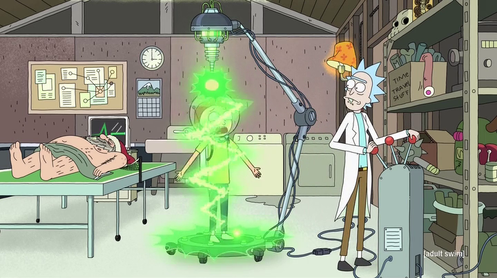

Shrink ray
Rick's shrink ray was a complex device that could shrink a human down to microscopic size in the episode Anatomy Park. Rick used this to shrink Morty, so he could enter Ruben's body and save Dr. Xenon Bloom who was having difficulty with problems in Anatomy Park, located inside Ruben.
Its counterpart, a growth/enlarge ray, is located inside of Ruben in the colon, and there is an additional enlarge ray on Rick's spaceship.